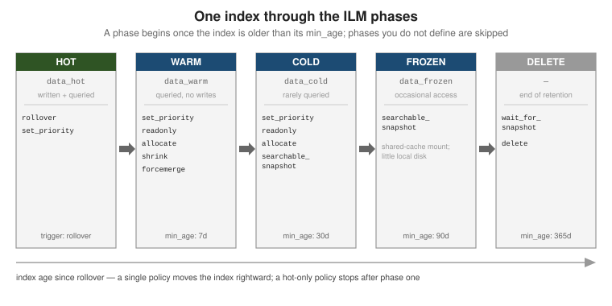

Index lifecycle & scaling
|
This content was generated with the assistance of AI and should be verified against the official documentation before being relied on in production. |
A shard’s primary count is fixed when its index is created, so Elasticsearch grows a dataset by rolling onto new indices rather than resharding a live one. This page covers how to size shards, how aliases hide a rolling set of indices behind one name, how index and component templates stamp settings onto new indices, and how data streams plus index lifecycle management (ILM) automate the roll-hot-then-age-out cycle. The cluster-side mechanics of shards and nodes are in Cluster, nodes & shards; the umbrella overview is Data management.
Shard sizing
Aim for primary shards in the 10—50 GB range. Smaller shards multiply cluster-state and per-shard
overhead (each shard is a full Lucene index with its own files, threads and heap footprint); larger
shards slow recovery, rebalancing and snapshots. A rough ceiling is 20 shards per GB of heap per
node. Check what you have with _cat/shards:
GET /_cat/shards/my-logs-*?v&h=index,shard,prirep,docs,store,node
# https://www.elastic.co/guide/en/elasticsearch/reference/current/size-your-shards.htmlA shard cannot be repartitioned freely once data is in it. Three offline operations exist, each producing a new index whose source must first be made read-only:
PUT /my-index/_settings
{ "settings": { "index.blocks.write": true } }
# _split -- more primaries; target count must be a multiple of the source count
POST /my-index/_split/my-index-6
{ "settings": { "index.number_of_shards": 6 } }
# _shrink -- fewer primaries; source count must be a multiple of the target,
# and every shard copy must sit on one node first (see "allocate" below)
POST /my-index/_shrink/my-index-1
{ "settings": { "index.number_of_shards": 1 } }
# _clone -- same shard count, cheap byte-for-byte copy
POST /my-index/_clone/my-index-copySee Split index, Shrink index and Clone index. Because none of these is an online operation, the standard pattern for data that keeps growing — logs, metrics, events — is time-based indices: a fresh index per time window or per size threshold, addressed collectively through an alias or a data stream, and retired whole. Everything below builds that pattern.
Aliases
An alias is a secondary name that points at one or more indices. Applications read and write the alias; you re-point it without redeploying anything. See Aliases.
Read aliases and the atomic swap
An alias over one or more indices makes reindexing invisible to clients. Build the new index, then
move the alias in a single POST /_aliases call — every action in the body applies atomically, so
no request ever sees zero or two target indices:
POST /_aliases
{
"actions": [
{ "add": { "index": "books-v2", "alias": "books" } },
{ "remove": { "index": "books-v1", "alias": "books" } }
]
}The single write alias
An alias may span many indices for reads but must resolve to exactly one for writes. Mark it with
is_write_index: true on one member; indexing to the alias then lands there while searches still
hit them all. This is what _rollover and ILM flip on each roll:
POST /_aliases
{
"actions": [
{ "add": { "index": "logs-000042", "alias": "logs", "is_write_index": true } },
{ "add": { "index": "logs-000041", "alias": "logs", "is_write_index": false } }
]
}Filtered aliases
A filtered alias appends a query to every search through it, giving a narrowed view of one physical
index (useful for tenant or region scoping). An optional routing value pins it to specific shards:
PUT /events/_alias/events-eu
{
"filter": { "term": { "region": "eu" } },
"routing": "eu"
}
GET /events-eu/_search # implicitly filtered to region = euSee Filter aliases. This is the read-time counterpart to the write-time document routing in Documents, indices & the inverted index.
Index templates & component templates
A composable index template pre-applies settings, mappings and aliases to any index whose name
matches one of its index_patterns at creation time. Reusable fragments live in component
templates referenced from composed_of; the last one listed wins on conflict, and explicit
settings in the index-template body win over all of them.
PUT /_component_template/logs-settings
{
"template": {
"settings": {
"number_of_shards": 1,
"number_of_replicas": 1,
"index.lifecycle.name": "logs-ilm"
}
}
}
PUT /_component_template/logs-mappings
{
"template": {
"mappings": {
"properties": {
"@timestamp": { "type": "date" },
"message": { "type": "match_only_text" },
"level": { "type": "keyword" }
}
}
}
}
PUT /_index_template/logs
{
"index_patterns": ["logs-*"],
"data_stream": {},
"composed_of": ["logs-settings", "logs-mappings"],
"priority": 500
}When two templates match the same name, the one with the higher priority applies (only one ever
does — they are not merged). Elastic ships built-in templates for its integrations, many with
priorities in the 100—200 range and names ending in @template; give your own a higher number so
it wins. Elastic’s data streams also default to the Elastic Common Schema (ECS) field set via
built-in @package and @custom component templates you can override. Legacy _template still
works but is superseded — use _index_template + _component_template. See
Index templates.
Data streams
A data stream is an append-only, time-series abstraction over a hidden set of backing indices.
You write and search one name; each backing index is a normal index named
.ds-<stream>-<date>-<generation>. The current generation is the write index; _rollover (called
by ILM, or manually) creates the next one. Every document must contain an @timestamp field. A data
stream is created lazily on the first write, provided a matching index template with "data_stream": {} exists.
POST /logs-app.prod/_doc
{ "@timestamp": "2025-09-06T10:00:00Z", "message": "server started", "level": "info" }
GET /_data_stream/logs-app.prod
# indices: [ ".ds-logs-app.prod-2025.09.06-000001" ] <- the write index
POST /logs-app.prod/_rollover # force a new generation nowAppend-only means you cannot PUT/DELETE a document by id on the stream itself; correcting
historical data means targeting the specific backing index, or _update_by_query /
_delete_by_query against the stream. See
Data streams. For
non-time-series data that still rolls over by size, an alias with is_write_index plus _rollover
gives the same mechanism without the @timestamp requirement.
The rollover decision
_rollover (and ILM’s rollover action) creates a new generation when the current write index
crosses any one of the configured thresholds. The common three are max_age,
max_primary_shard_size and max_docs; ILM re-checks on its poll interval
(indices.lifecycle.poll_interval, default 10 minutes), so rollover is prompt but not
instantaneous.
Index lifecycle management (ILM)
An ILM policy moves an index through up to five phases — hot, warm, cold, frozen,
delete — running phase actions as it goes. Attach a policy by naming it in a template’s
index.lifecycle.name (data streams also need index.lifecycle.rollover_alias only for the legacy
alias style; with data_stream: {} the stream is the target). See
ILM: Manage the index lifecycle.

PUT /_ilm/policy/logs-ilm
{
"policy": {
"phases": {
"hot": {
"actions": {
"rollover": { "max_primary_shard_size": "50gb", "max_age": "30d" },
"set_priority": { "priority": 100 }
}
},
"warm": {
"min_age": "7d",
"actions": {
"forcemerge": { "max_num_segments": 1 },
"shrink": { "number_of_shards": 1 },
"allocate": { "require": { "data": "warm" } }
}
},
"cold": {
"min_age": "30d",
"actions": {
"searchable_snapshot": { "snapshot_repository": "backups" }
}
},
"frozen": {
"min_age": "90d",
"actions": {
"searchable_snapshot": { "snapshot_repository": "backups" }
}
},
"delete": {
"min_age": "365d",
"actions": { "delete": {} }
}
}
}
}Key points:
-
min_ageis measured from rollover, not from index creation — so a document’s age in the stream, not the calendar, drives progression. A phase you omit is skipped entirely. -
Actions seen above:
rollover(hot only),set_priority(recovery order after a restart),forcemerge(collapse to one segment for read-only data),shrink(fewer primaries),allocate(move shards to nodes tagged for a tier),searchable_snapshot(back the index with a snapshot),delete, plusreadonly,downsampleandwait_for_snapshot. -
Check where an index is with
GET /my-index/_ilm/explain.
GET /logs-app.prod/_ilm/explain
# phase: "warm", action: "forcemerge", step: "forcemerge", age: "9.10d"The data-stream lifecycle
If all you need is rollover plus time-based deletion — no tiers, no shrink, no searchable snapshots — the built-in data-stream lifecycle is simpler than ILM: one data_retention setting, applied
by the stream itself, with rollover handled automatically.
PUT /_index_template/logs
{
"index_patterns": ["logs-*"],
"data_stream": {},
"template": {
"lifecycle": { "data_retention": "30d" }
}
}
# or on a stream that already exists
PUT /logs-app.prod/_lifecycle
{ "data_retention": "30d" }
GET /logs-app.prod/_lifecycle/explainILM and the data-stream lifecycle can coexist (ILM for tiering, the data-stream lifecycle for retention), but for a given backing index one of them owns each concern. See Data management for how the two fit together.
Downsampling & searchable snapshots
Downsampling replaces a time-series data stream’s raw documents with pre-aggregated ones at a
coarser fixed interval (for example, per-second metrics rolled to hourly min/max/sum/avg),
shrinking storage for old data that only feeds charts. It applies to a time-series data stream
(index.mode: time_series) and runs either as an ILM action or on demand:
# as an ILM phase action
"downsample": { "fixed_interval": "1h" }# on demand, producing a new downsampled index
POST /.ds-metrics-2025.08.01-000004/_downsample/metrics-2025.08.01-1h
{ "fixed_interval": "1h" }See Downsampling.
Searchable snapshots let the cold and frozen phases keep an index queryable while its data
lives in a snapshot repository instead of on regular disk. cold still caches a full copy locally;
frozen mounts the index against a bounded shared cache and holds almost nothing locally, trading
query latency for a large drop in storage cost. Both need a registered repository — see
Administration, monitoring & snapshots
and
Searchable snapshots.
Horizontal scale: the contrast with MongoDB
Elasticsearch and MongoDB both scale reads and writes by spreading data across nodes, but they add
capacity differently. In Elasticsearch a document’s shard is hash(_routing) % number_of_shards,
and number_of_shards is frozen at index creation — so you scale a growing dataset by creating
more indices (rollover) and, if a single index is mis-sized, by an offline
_split/_shrink/reindex. There is no online repartitioning of a live index.
MongoDB instead makes the shard key’s chunk map mutable: the balancer splits and migrates chunks between shards online as data grows or as you add a shard, with no new collection. See MongoDB Sharding for that model, and Cluster, nodes & shards for how Elasticsearch places and rebalances the shards it already has. Tuning the indices themselves for query and indexing throughput is in Performance tuning.